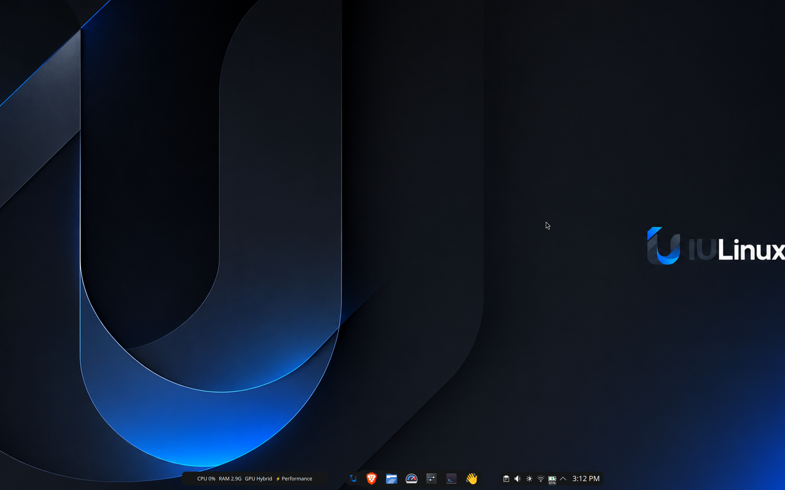
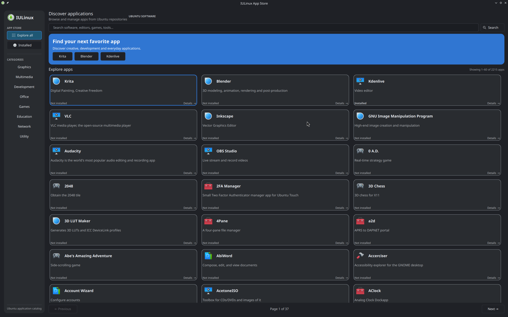
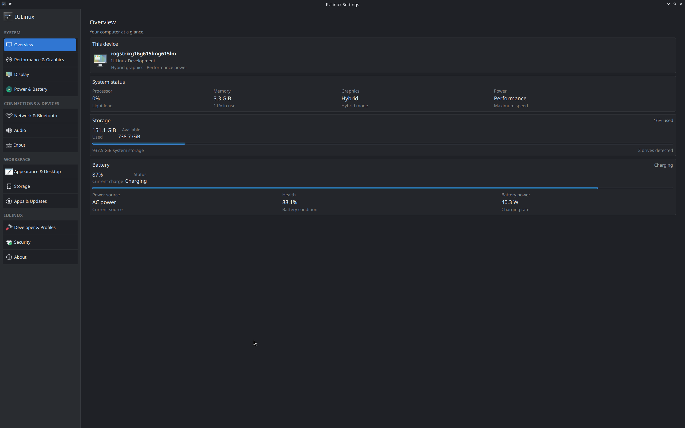
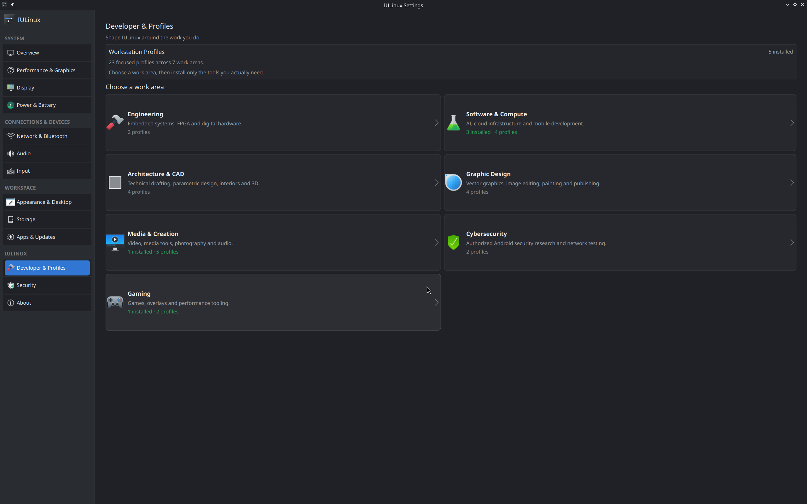
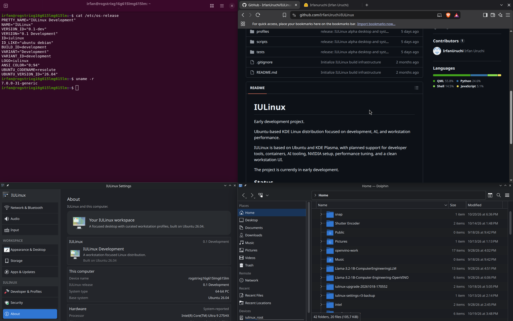
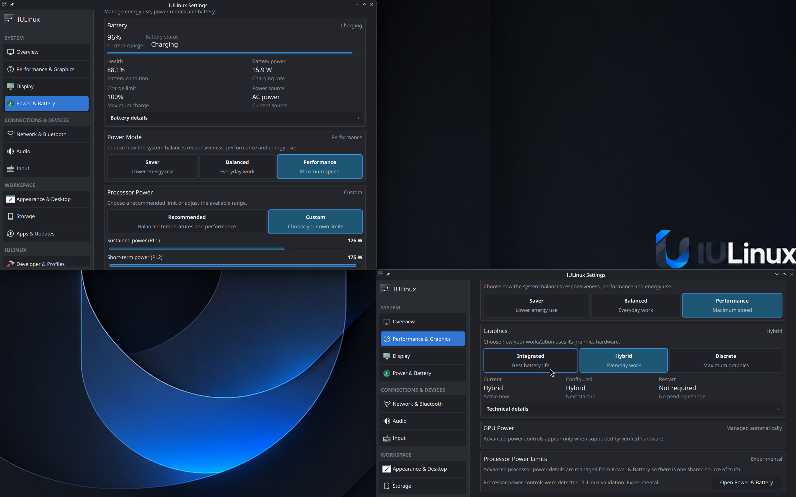

System visibility
Settings reports displays, audio, input, storage, connectivity, security, battery and provider state from the running system.
ImplementedIULinux 0.1 Alpha 1
IULinux 0.1 Alpha 1 combines Ubuntu 26.04 LTS, KDE Plasma, IULinux Settings, a PackageKit-backed App Store, signed IULinux updates and opt-in workstation profiles.

The system
These are components of the current Alpha build. Some features depend on the hardware and available system services.
Settings reports displays, audio, input, storage, connectivity, security, battery and provider state from the running system.
ImplementedThe App Store searches local AppStream metadata and previews PackageKit actions before authorization-gated installation or removal.
ImplementedThe IULinux repository package pairs a dedicated keyring with a Signed-By source so APT can verify IULinux packages.
Release component23 manifest-backed add-ons cover development, media, design, engineering, gaming and authorized security research.
OptionalOptional profiles
Optional package profiles cover development, engineering, media, design, gaming, and authorized security research. They are not installed by default.
Screenshots
These captures show the desktop, App Store, Settings, profiles, workspace and power/performance controls as they exist in the project.





Downloads and release information
Download IULinux-0.1-alpha1-amd64.iso from the official release host. It is 2,952,669,184 bytes. The matching SHA-256 file is published beside it. The ISO still carries the development volume label IULINUX_DEV.
Documentation
Read the HTML Handbook online or download the PDF. It covers installation, daily use, IULinux Settings, profiles, package management, troubleshooting, and the maintainer workflow.
FAQ
Yes. The public amd64 artifact and matching checksum are available in the Download section. Start with verification and installation.
The target is amd64. There is no universal compatibility matrix; graphics, firmware, Secure Boot, NVIDIA and power behavior must be tested on the target machine.
No. Alpha 1 uses Ubuntu signed boot components and a specific Calamares EFI policy. Read the security and troubleshooting chapter before relying on it.
The independent signed archive is linked in the package management chapter.